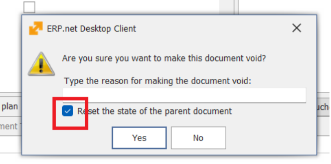

Breaking changes
1. Follow Levels and Notifications Behavior
Notifications now depend on the Follow Level of objects. All existing follows have been migrated to TAGGED. As result the app will appear empty after the update.
In order to have Favorites, you need to mark the objects as such again.
TAGGED objects deliver chat/comment events only.
➡️ To continue receiving update or implicit notifications, mark important objects as Follow or Favorite.
2. JavaScript Enum Handling in User Business Rules
Enum values are now handled as strings instead of numbers in JavaScript user business rules.
Numeric enum comparisons may no longer work as expected.
➡️ Details
3. ToDo application shows all Tasks now
The default behavior of the ToDo application has changed.
Linked ToDo tasks are now visible by default, whereas previously they were hidden until explicitly enabled by the user. Users who prefer the previous behavior can disable it using the /ToDo/ShowLinked configuration key.
➡️ Details
4. At VOID - parent document is not auto-reset anymore
(versions 2026.2.1.60 up to 26.2.1.89)
When performing Void from inside a document form, the parameter Reset the state of parent document is no longer selected by default. This change prevents unnecessary processing. The parameter can still be selected manually if needed.
- This change only applies when Void is executed from the document form.
- The behavior remains unchanged when Void is executed from the Document Route or the Navigator.
5. At VOID - parent document reset default is now configurable
In versions 26.2.1.60 up to 26.2.1.89, when performing Void from a document form, the parameter Reset state of parent document is not selected by default. This was introduced to prevent unnecessary processing.
Starting with 26.2.1.90, this behavior is configurable per instance through the configuration key:/Documents/DefautResetStateOfParentDocument
During update to 26.2.1.90, the system creates this key with value 1. This restores the previous default behavior for upgraded instances.
So in practice:
- 26.2.1.60 to 26.2.1.89 → breaking-change behavior №4 applies.
- 26.2.1.90 and later → administrators can choose the behavior for their instance.
This applies to Web Client and Windows Client.

6. Enterprise Company Location is now required in documents
Starting with version 26.2, documents require a value in Enterprise Company Location field.
This may affect databases where some Enterprise Companies do not have any defined Company Locations. In such cases, users may be unable to create or save documents because there is no available value to select for Enterprise Company Location.
To prevent this issue during upgrade, the system runs an update procedure that:
- creates a default Company Location for each Enterprise Company that has none;
- fills Enterprise Company Location in existing documents where the field is empty, using the newly created Company Location.
The created Company Location uses the following name:
- en: Head Office
- bg: Централен офис
As a result, all Enterprise Companies will have at least one available Company Location, and existing documents with missing Enterprise Company Location values will be updated automatically.